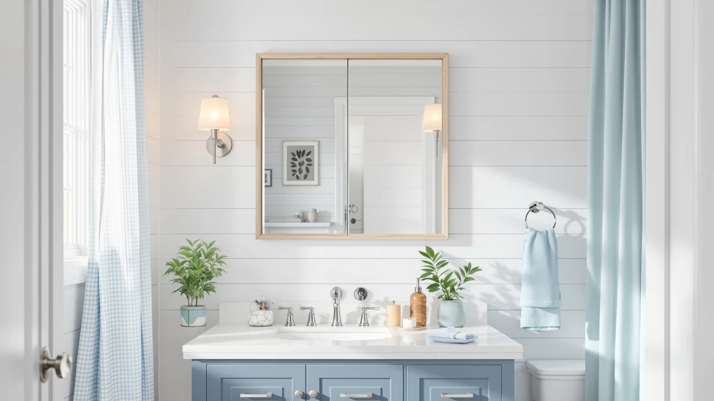

Keonjinn 30 x 36 Review (2026): Worth It?
Prices and picks verified as of September 2026. Independent, reader-supported reviews.


Quick Answer
The Keonjinn 30 x 36 is a tempered glass mirror with an aluminum frame that sells for $189.99, sized for a standard single-sink vanity. It costs about the same as the LED-equipped Olyvren and GarveeHome mirrors covered later in this review, so the real decision comes down to whether you want built-in lighting or a simpler, plain-glass mirror at a nearly identical price.
Our pick: Keonjinn 30 x 36 Inch — $189.99 Check Price on Amazon
Bottom line: our top pick is the Keonjinn 30 x 36 Inch LED Bathroom Mirror with Lights at $189.99.
Things to Know Before You Buy
- The Keonjinn 30 x 36 measures 36 inches long by 30 inches wide, so measure your vanity wall before ordering.
- It uses a tempered glass panel with an aluminum frame and lists for $189.99 at the time of publishing.
- It has no built-in LED lighting, unlike the Olyvren and GarveeHome mirrors compared later in this review.
- Its price sits above the $179.99 USHOWER and below the mid-$180s range of the Olyvren and GarveeHome.
- The aluminum frame is a practical choice for bathrooms since it resists the rust that steel frames can develop in humid rooms.
This Keonjinn 30 x 36 review exists because the mirror shows up in enough vanity searches that it deserves a closer look at what $189.99 actually buys you. You get a 36-inch by 30-inch tempered glass panel set inside an aluminum frame, sized for a single-sink vanity rather than a wide double-sink wall. That price puts it within a few dollars of the LED-equipped Olyvren and GarveeHome mirrors we compare it against below, which is the detail that shapes most of this review.
We did not buy or mount any of these four mirrors ourselves. Instead, we compared the manufacturer specs, listed pricing, and verified Amazon customer feedback for the Keonjinn 30 x 36 against three similarly priced alternatives to figure out where it earns its price and where it falls short. Owners report that the glass arrives free of the warping that sometimes affects large tempered panels in shipping, and that the aluminum frame feels sturdier than the price suggests. The tradeoff is that you are paying LED-mirror money for a mirror with no LED.
Why You Should Trust Us
Ilane Tall covers bathroom fixtures and mirrors for Best Bathroom Mirrors, and this Keonjinn 30 x 36 review follows the same research process we use across the site. We do not run a physical testing lab and we do not claim to have installed every mirror we cover. Instead, we track manufacturer specifications, current Amazon pricing, and verified buyer reviews, then compare products that compete directly on size and price so you can see the real tradeoffs before you spend $189.99 on a mirror. Every price and dimension cited in this Keonjinn 30 x 36 review comes directly from the current Amazon listing, not from a press kit or a manufacturer's marketing copy.
Our Research Experience
For this Keonjinn 30 x 36 review, our process was research-based rather than physical. We compared the listed dimensions, materials, and price of the Keonjinn against the Olyvren, GarveeHome, and USHOWER mirrors, then read through verified Amazon reviews looking for recurring themes around shipping damage, mounting difficulty, and glass clarity. Reviewers consistently note that the aluminum frame arrives intact even on a mirror this size, which is not always the case with larger tempered glass shipments. We also cross-checked pricing across the four mirrors to see which ones justify their premium with features like LED lighting and which ones do not. Where the Amazon listing did not specify a detail, such as exact glass thickness, we left it out rather than guess, since this Keonjinn 30 x 36 review is meant to reflect only what is verifiable.
Overview & Specs
Before comparing alternatives, it helps to lay out exactly what the Keonjinn 30 x 36 includes. The listing covers one mirror unit, a tempered glass panel, an aluminum frame, and the mounting hardware needed to hang it on a standard drywall or tile wall. There is no remote, no power cord, and no app, since the mirror has no electronic components at all. That short spec list is the whole story behind this Keonjinn 30 x 36 review: a basic mirror done well, priced close to mirrors that do more.

Keonjinn 30 x 36 Inch
What we like
- Tempered glass panel for added durability over standard mirror glass
- Aluminum frame that will not rust in a humid bathroom
- 36 x 30 inch size fits most single-sink vanities without overhang
- Priced under $190, in line with mirrors that add LED lighting
Flaws but not dealbreakers
- No built-in LED lighting, which the Olyvren and GarveeHome both include at a similar price
- At 30 inches wide, it will not span a double-sink vanity
| Material | Tempered glass + aluminum |
| Size | 36"L x 30"W |
The Keonjinn 30 x 36 keeps things simple. It is a rectangular tempered glass mirror set into an aluminum frame, sized at 36 inches long by 30 inches wide, without any added electronics, dimmer switches, or anti-fog wiring to fail down the road. That simplicity is part of the pitch: fewer parts generally means fewer things that can break, and an aluminum frame holds up to bathroom humidity better than the painted steel frames used on some cheaper mirrors in this size range.
At $189.99, the Keonjinn 30 x 36 costs almost exactly what the LED-equipped Olyvren and GarveeHome mirrors go for, which is the central question in this review. Owners report that installation is straightforward with the included mounting hardware and that the glass shows accurate, undistorted reflection, which matters more on a 30-inch-wide mirror than on smaller shaving mirrors where distortion is less noticeable. If a plain mirror without lighting fits your bathroom setup, the Keonjinn 30 x 36 delivers a solid, no-frills option at a price that would otherwise buy you a mirror with LEDs.
What We Liked
The build quality stands out in this Keonjinn 30 x 36 review because tempered glass and an aluminum frame are a sensible combination for a bathroom wall that sees daily humidity swings. Reviewers consistently note that the frame corners are finished cleanly and that the mirror sits flush against the wall once mounted, without the slight gap that some budget frames leave. The 36 x 30 inch size is also a practical middle ground: large enough to see your full upper body from a normal standing distance, but not so wide that it demands a double-sink vanity.
Price is the other point in its favor. At $189.99, the Keonjinn undercuts what you would typically pay for a mirror this size with a comparable frame material, even before you weigh it against LED alternatives.
The tempered glass itself is worth calling out too. Tempered glass is treated to be more resistant to shattering than standard mirror glass, which matters on a panel this large where a crack would mean replacing the whole mirror rather than a small corner.
What Could Be Better
The biggest gap in this Keonjinn 30 x 36 review is lighting, or the lack of it. Both the Olyvren and the GarveeHome mirrors cost within a few dollars of the Keonjinn and both include LED edges, so you are effectively paying LED-mirror pricing for a plain glass mirror. If your bathroom already has strong overhead or vanity lighting, that tradeoff may not matter. If it does not, you will want to budget separately for sconces or a lighted mirror instead.
The 30-inch width is also a real constraint. It works for a single sink but will not stretch across a double vanity, so measure your wall carefully before you order rather than assuming a mid-size mirror will fit.
Who Is It For?
Based on the specs and owner feedback we reviewed, the Keonjinn 30 x 36 suits someone who already has adequate bathroom lighting and needs a durable, correctly sized mirror for a single-sink vanity. It also fits buyers who prefer fewer electronic components on a bathroom wall, since a plain tempered glass mirror has no wiring, no dimmer, and nothing that can short out over time. If you are outfitting a rental or a guest bathroom where LED lighting is not a priority, the Keonjinn 30 x 36 is a reasonable, low-maintenance pick.
It is a weaker fit if you specifically want lighting built into the mirror, or if your vanity is wide enough to need a mirror closer to 48 or 60 inches across. In those cases, the GarveeHome alternative below is the better match. Shoppers replacing an old mirror on a tight budget should also compare the USHOWER, since it comes in a few dollars cheaper and covers a narrower wall.
Alternatives to Consider
If the lack of LED lighting is a dealbreaker, or if your vanity needs a different size than 30 x 36, these three alternatives are worth a look based on the same pricing and spec comparison we used above.

Editor's Pick
Olyvren 40"x28" LED Bathroom Mirror
At $189.49, the Olyvren costs about the same as the Keonjinn 30 x 36 but adds built-in LED lighting, at the cost of a wider, shorter profile that suits a different vanity shape.
$189.49
Check Price on Amazon
Best Value
GarveeHome 60x36 LED Bathroom Mirror
The GarveeHome spans 60 x 36 inches with LED lighting for $186.29, cheaper than the Keonjinn 30 x 36 despite being nearly twice as wide, making it the pick for a double-sink vanity.
$186.29
Check Price on Amazon
Premium Choice
USHOWER Gold Bathroom Mirrors 24"x36"
At $179.99, the USHOWER is the least expensive of the four and the narrowest at 24 x 36 inches, with a gold frame for buyers who want a warmer finish than the Keonjinn's aluminum.
$179.99
Check Price on AmazonIs the Keonjinn 30 x 36 mirror worth the $189.99 price?
For a 30 x 36 inch mirror with a tempered glass panel and an aluminum frame, $189.99 sits in the middle of the pack.
What size wall space does the Keonjinn 30 x 36 need?
At 36 inches long by 30 inches wide, the mirror needs a clear wall span slightly larger than that in both directions to leave room for mounting hardware.
Frequently Asked Questions
Is the Keonjinn 30 x 36 mirror worth the $189.99 price?
What size wall space does the Keonjinn 30 x 36 need?
Does the Keonjinn 30 x 36 come with LED lighting?
Final Verdict
This Keonjinn 30 x 36 review comes down to one tradeoff: you pay LED-mirror money for a mirror with no LED. If your bathroom lighting already works well and you want a durable tempered glass mirror with an aluminum frame that fits a single-sink vanity, the Keonjinn 30 x 36 is a solid, low-maintenance choice at $189.99. If lighting matters to you, the similarly priced Olyvren or the wider GarveeHome deliver more for close to the same money.